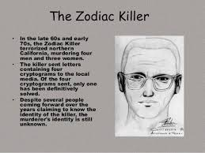
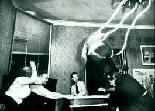
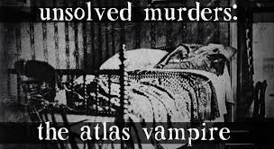
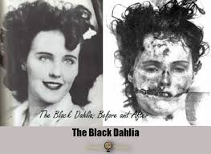
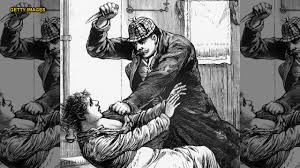
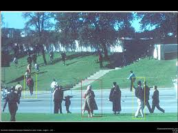
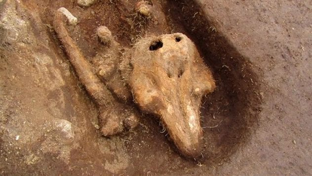
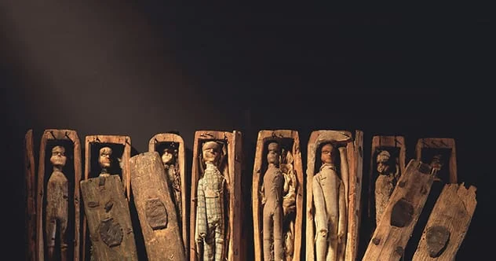
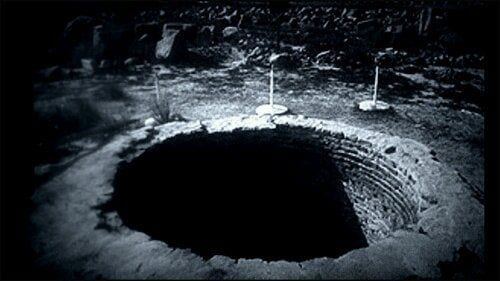
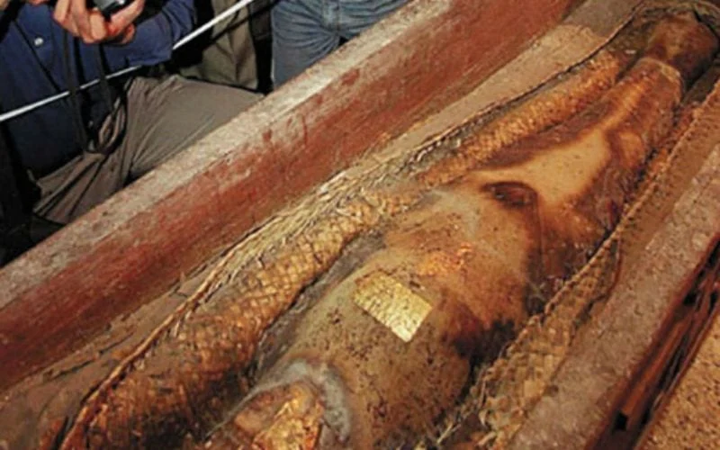

Sometimes, events are so odd that no one can figure out exactly what happened. Missing people, murders, secret societies, and even potential paranormal events have confused people for years.
Elisa Lam
On January 31, 2013, 21-year old Canadian Elisa Lam was on vacation at the Hotel Cecil in Los Angeles. Security cameras captured her on the elevator. In the video, she looked scared of someone–or something. She left the elevator, acting very strange…and disappeared. Weeks later, her body was found in the water tower on the top of the hotel. The Los Angeles Police department claimed her death was “accidental drowning”, but internet sleuths think that something more may be going on.
Cicada 3301
A strange image appeared on the website 4Chan in 2012. The anonymous poster claimed that they were from a secret group called Cicada 3301, and they are looking for intelligent people to join their organization. There was a secret message hidden in an image. This clue lead to dozens of other puzzles, which eventually showed that the group exists all over the world. No one is sure who or what CiWSBTWSBTcada 3301 actually is, but new puzzles appear in January of every year.
The Mary Celeste
In 1867, a beautiful ship named the Mary Celeste left the coast of New York. The captain was a man named Benjamin Briggs, and he brought his family and crew to transport 1,700 barrels of alcohol to Italy. They never made it to their destination. The boat was found floating safely in the Atlantic Ocean, off the Azores Islands, on December 5, 1872. This did not look like a pirate attack, because nothing was stolen, and all of the paper documents were still on board. The only thing missing was the people.
The Taos Hum
In a small town of Taos, New Mexico, there is no such thing as silence for some people. When townspeople quiet down, many citizens report they can hear a humming noise, similar to a diesel engine. In 1997, Congress decided to investigate the hum, and yet they could not come up with a rational explanation. The sound is undetectable by audio equipement.
The Zodiac Killer

A serial killer nicknamed “The Zodiac” killed at least 5 people in California during the 1960’s.
All of the victims were shot, and the police would have never connected the dots, if he had not called them, admitting his crimes. He explained that he enjoyed “hunting” people. He has still never been caught.
Dennis Martin
The Martin Family was having a picnic at the Smoky Mountains National Park. Dennis Martin, who was only 6 years old, ran into the woods during a game and never came back. A search party of thousands of people looked for him for a week. No trace of him has ever been found.
The Frost Family Poltergeist

In 1921, the Frost family bought some coal for their fire in Hornsey, England. Shockingly, the coal began to explode, and fly across the room. Other objects like knives began flying through the air. They called the police, who investigated, and believed there may have been some tampering with the coal, citing the possibility of adding explosive elements. However, further investigation confirmed it was just normal coal. The family began to think that it was a ghost, so they called in a priest, who also witnessed the strange occurrences. The events were so scary that the five year old daughter was literally “scared to death,” and their son had a nervous breakdown.
Skinwalker Ranch
The Sherman Ranch, AKA “Skinwalker Ranch” in Ballard, Utah is apparently a hotspot for paranormal activity. The owners of the ranch claimed that their cattle was being attacked by bullet-proof wolves, their bulls were crammed into storage containers, and a newborn calf was mysteriously mutilated within minutes. A wealthy millionaire named Robert Bigelow decided to buy the ranch to study it with his organization called the National Institute of Discovery Science. The events of Skinwalker Ranch are unexplained, but many people blame it on aliens or other paranormal activity.
Ricky McCormick
In 1999, 41-year old Ricky McCormick was found dead in the middle of a field in Missouri. Inside of his pockets were two pieces of paper with strange writing that may actually be a secret code. The letters were in Ricky’s crude handwriting, but his family was confused because Ricky could not read. No one has found the killer, or figured out what his messages meant.
Margaret Foos
In the 1960’s, a young woman named Margaret Foos began showing a skill called “blind reading,” where she could touch books and read them without ever opening them. She claimed that this was due to her psychic powers. Scientists began to study her, blindfolding her and asking her to touch random books. Her case was also studied by the FBI, who could not find any proof that she was tricking them.
The Max Headroom Hijack
During the 1980’s, there was a popular artificial intelligence (AI) character was named Max Headroom. In 1987, a hacker dressed in a Max Headroom mask interrupted the cable station and appeared on the screen. He began screaming and saying strange, confusing things. No one knows who hacked the airwaves, or why they did it.
Jonbenet Ramsey
Six year old beauty pageant princess Jonbenet Ramsey was murdered in her home of Boulder, Colorado in 1996. Even to this day, no one knows who actually killed her. There are a total of 8 possible suspects, including her parents and brother.
The Green Children of Woolpit
According to historic records from the 12th Century, two children- a brother and sister with green skin appeared in a village called Woolpit in Suffolk, England. They wore strange clothes, and spoke a language that no one could understand. They only ate beans and refused to eat anything else for several months. The boy became sick and died. Once the girl grew up, her skin stopped being green, and she learned to speak English. She explained that they came from a place with other green-skinned people called St. Martin’s Land, which was an underground place where the sky was always twilight. There was a river, and a “luminous land” shining across the water. The siblings said they climbed into a mysterious cave, and on the other side, there was blinding sunlight, and they were somehow in England. Modern-day historians believe that these children were actually Flemish immigrants, while others believe they may have been aliens from another planet, or beings from another dimension.
Maurice Dametz
At 80 years old, Maurice Dametz had difficulty walking. He drove into the woods of Colorado with a younger friend who helped him hunt for topaz gemstones. Maurice’s friend left him alone for only 15 minutes, and walked a mere 150 yards away. When he came back, the old man was gone. No one has been able to find him since.
The Atlas Vampire

A female sex worker was found dead in Stockholm in 1932. Her body had been drained of blood, and there was evidence that her killer was drinking it. The murderer was never found, and became known as “The Atlas Vampire”.
Genghis Khan’s Tomb
Just before he died, the terrifying ruler, Genghis Khan, ordered his soldiers to make sure no one could find where he was buried. It is said that anyone who helped build his tomb was killed and a river was diverted to flow over the burial site. Over 10,000 volunteers tried to look through digital maps to try to find his burial site in Mongolia. Researchers still cannot seem to find where this ancient leader was buried.
The Count of St. Germain
Throughout the 1700’s, a man who is only known as the Count of St. Germain was traveling throughout Europe. He was spotted many places, and yet he always seemed to appear to be the same age. No one knew where he came from, but he could speak multiple languages, and was talented in just about everything. He was also an alchemist–one of the people who was studying the secret to immortality. On paper, he died in 1785. However, there are records of him being alive afterwards–still looking just as young as he was years before. Some believe he actually figured out how to live forever.
The Black Dahlia

In 1947, Elizabeth Short’s body was found in a parking lot in Los Angeles. She had been cut into two pieces, and her face was mutilated. This inspired the look given to The Joker in the 2008 Batman movie The Dark Knight. The murderer was never found.
The Men in Black
Many people who study UFO’s claim that they were approached and questioned by “men in black”, and that encounters have been documented throughout history. While this may seem far-fetched, security camera footage actually captured The Men in Black in Maryland in 2008. They had identical faces, as if they were twins- including the fact that they didn’t have eyebrows. Hotel staff described them as having abnormally huge blue eyes, and that they never blinked. They also wore identical suits and trench coats with old fedora hats. The men were asking for Shane Sovar, the hotel manager who had recently reported seeing a UFO. Thankfully, Shane wasn’t working that day, and the two men questioned the staff and left.
Jack The Ripper

In Victorian England, dozens of prostitutes were being murdered. A man wrote a letter to the local newspaper in London, admitting that he was the killer. He gained the nickname “Jack the Ripper,” and the police were never able to find him.
The Babushka Woman

When President John F. Kennedy was assassinated, many people began to run away from the scene, except for one woman, who was wearing a scarf around her head. She was filming the entire time. Since this was during The Cold War, the woman was given the nickname “Babushka Woman,” since the scarf was similar to what Russian grandmothers would wear. The FBI searched for this woman because they wanted to question her and get the footage from her camera. One woman came forward to say she was the Babushka Woman, but she could not keep her story straight. Authorities believe she lied for the attention. The true Babushka Woman has yet to be found.
The Handless Monk

In 2017, archaeologists made the startling discovery of a medieval dolphin skeleton on an islet off the coast of Guernsey. The following year, they made an even more baffling discovery: that of a male skeleton with no hands. Following an investigation, it was found that the skeleton of the man, believed to be a monk, was buried at a much later time than the dolphin and the two incidents were not related.[10]Archaeologists initially believed the islet, Chapelle Dom Hue, used to be much larger and home to a few Christian monks during the Medieval Era. One of the theories surrounding the mystery of the skeleton has it that the monk may have suffered from leprosy and had his hands cut off because of it. However, some experts feel this is unlikely and don’t believe that the man was a monk, as the details on the skeleton’s clothing indicate the body may have been buried in the 17th century, long after the islet would have been inhabited by monks.The skeleton discovery remains shrouded in mystery for the time being, as experts are still in the process of examining the remains and investigating a different theory which states that the man may have been a sailor who died at sea and was thrown overboard before washing up on the islet.
Miniature coffins

In 1836 a group of boys set off for Arthur’s Seat in Edinburgh, Scotland to hunt rabbits. Intrigued by a concealed cave, the boys decided to peek inside. After pulling away the stones covering the entrance, they stumbled upon 17 miniature coffins, each with a wooden doll inside. The dolls had big eyes and were dressed in cotton clothing.[9]When the discovery was reported in the Scotsman newspaper, the article mentioned that the coffins were decorated with funeral trappings and it seemed that they had been placed inside the cave recently.As is always the case with unexplained discoveries, multiple theories were presented to try and explain the coffins. Some people thought it might be children playing a trick, while others mused that witches might have used the coffins for rituals. Yet another theory said that the coffins may have been part of an ancient custom to give sailors who died at sea a Christian burial. A dark theory suggested that the coffins may have been set up in tribute of killers William Burke and William Hare who murdered 17 people.The true purpose of the coffins and who placed them in the cave remains a mystery.
Titanic poisoning
On the last day of filming the movie, Titanic, in Nova Scotia, James Cameron suddenly felt inexplicably ill and disoriented. When he started vomiting, he realized something was very wrong. Once he got back to the set, he found he wasn’t the only one feeling strange as some of the cast and crew were vomiting or crying and some even laughing.At Dartmouth General Hospital, things took an even weirder turn when a crew member stabbed Cameron in the face with a pen while others started stealing unoccupied wheelchairs and wheeling themselves up and down the hospital corridors. Cameron, who was bleeding from the pen stab wound couldn’t stop laughing.Once the hospital staff ruled out food poisoning, they realized that chowder consumed by more than 60 people on set had been laced with P.C.P.[8]Theories abounded; one of which had it that a dismissed crew member tried to take revenge by poisoning the food. Officially the mystery remains long after the case was closed in 1999 due to a lack of suspects.
Mel’s bottomless hole

On February 21, 1997, a listener appeared as a guest on Coast to Coast AM with Art Bell. The man called himself Mel Waters and related a story reminiscent of the Pet Sematary plot. Waters claimed that a mysterious hole had appeared on his property in a rural area nine miles west of Ellensburg in Kittitas County, Washington. He went on to say that the hole was more than 80,000 feet deep and could resurrect dead animals. Waters furthermore claimed that government officials seized his land, took ownership of the hole and paid him to relocate to Australia.[5]Waters appeared on the show again in 2000 and 2002, soon after which it was reported by a local newspaper that no one named Mel Waters ever lived on the Manastash Ridge near Ellensburg. Most people wrote the story off as ramblings by an unstable man and didn’t give the mystical hole another thought.Then in 2008, a medicine man named Red Elk claimed that he knew the mysterious hole well and that it could set ice on fire. He also made the bizarre claim that the hole cooked a sheep while it was still alive and then made a seal appear inside the cooked sheep.To this day, no one knows the real identity of Mel Waters and why he appeared on radio three times to relay a story that was only ever corroborated by 1 other person. Even so, some die-hard believers still find time in their schedule to wander around the Manastash area in the hopes of finding this mysterious hole in the ground.
Blood Stained Nina Craigmiles’ crypt
Nina Craigmiles was born to Myra Adelia Thompson Craigmiles and John Henderson Craigmiles on August 5, 1864. As she grew, Nina learned to love riding on a horse-drawn buggy. During one such outing with her grandfather on St. Luke’s Day in 1871, the buggy they were riding in was hit full-on by an oncoming train as they were crossing the railroad tracks. Seven-year old Nina was killed on impact.While her family grieved, Nina’s father changed his will to include a clause that stated he wished to be buried inside the mausoleum where Nina’s ashes rested. John Craigmiles also ensured that an Episcopal church was built in Nina’s memory, which included the marble mausoleum in the churchyard to keep Nina’s ashes in. The church was named St. Luke’s Memorial Episcopal Church and was consecrated in 1872.[4]John died in 1899 and was buried as requested; inside Nina’s mausoleum. Sometime later, red stains started appearing on the outside of the mausoleum. Efforts to clean the stains failed and when the marble blocks were replaced, the stains simply reappeared. In modern times, sightings have been reported of a little ghost girl in 1800s clothing, playing outside the mausoleum. The red stains, whom many believe to be blood, are still visible on the Craigmiles Mausoleum in Cleveland and tourists love relating the story. However, the cause of the stains remains a mystery.
The mummy that wasn’t

Back in 2000, Pakistan, Iran and Afghanistan battled for ownership of what they believed to be the mummified remains of a 2,600-year old Persian princess. The mummy was found by police during a raid of a Baluchistan chieftain home in Kharan, Pakistan and was to be sold on the black market for millions. When she was discovered, the mummy’s head was adorned with a golden crown and there were gold ornaments in her coffin, which truly made it seem that an archaeological wonder had been found. However, not everyone was convinced that the mummy was the real deal. Prof Ahmad Dani, director of the Institute of Asian Civilizations in Islamabad, claimed to have known from the beginning that the mummy was not all it was cracked up to be.[1]He was not wrong. It was soon discovered, after a detailed study of the remains, that the body was not 2,600 years old and not a Persian princess. It was revealed that the coffin she rested in, was not as old as her remains was believed to be and that the mat she was laid on, was possibly a mere five years old. The Persian mummy was now believed to be the body of a 21-year old female murder victim; her neck, jaw and back broken. Finally, it was confirmed, with the help of radiocarbon testing, that the victim had died in 1996. The “mummy” was buried in 2005 without the victim ever being identified.